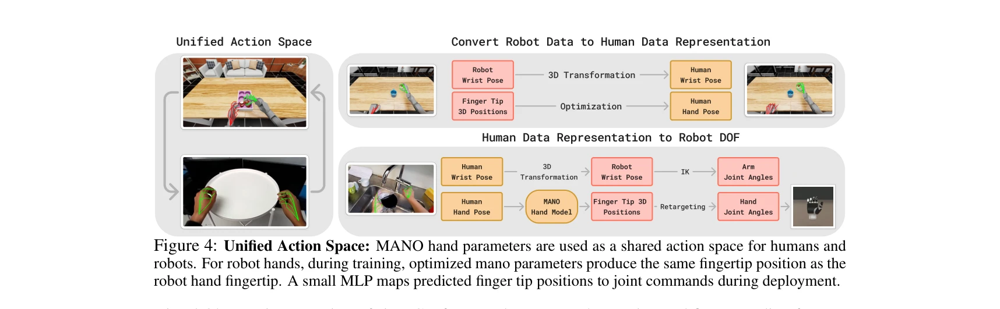
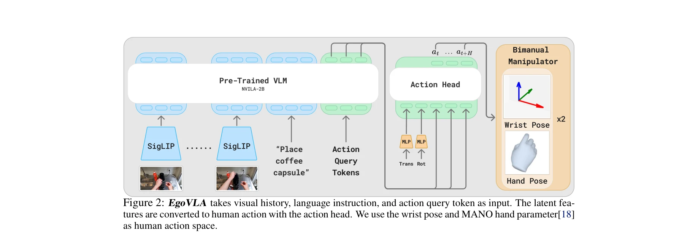

Essence

Figure 1: EgoVLA. Our vision-language-action model learns manipulation skills from egocentric human
egocentric human 비디오로부터 Vision-Language-Action (VLA) 모델을 학습하여 로봇 조작 정책을 획득하고, Inverse Kinematics과 retargeting을 통해 인간 행동을 로봇 행동으로 변환한다.
저자: Ruihan Yang, Qinxi Yu, Yecheng Wu, Rui Yan, Borui Li, An-Chieh Cheng, Xueyan Zou, Yunhao Fang, Xuxin Cheng, Ri-Zhao Qiu, Hongxu Yin, Sifei Liu, Song Han, Yao Lu, Xiaolong Wang | 날짜: 2025-07-16 | URL: https://arxiv.org/abs/2507.12440
Figure 1: EgoVLA. Our vision-language-action model learns manipulation skills from egocentric human
egocentric human 비디오로부터 Vision-Language-Action (VLA) 모델을 학습하여 로봇 조작 정책을 획득하고, Inverse Kinematics과 retargeting을 통해 인간 행동을 로봇 행동으로 변환한다.

Figure 4: Unified Action Space: MANO hand parameters are used as a shared action space for humans and

Figure 2: EgoVLA takes visual history, language instruction, and action query token as input. The latent fea-
총평: 본 논문은 egocentric human 비디오를 활용한 VLA 학습이라는 혁신적 접근으로 로봇 데이터 수집의 확장성 문제를 효과적으로 해결하며, unified action space 설계와 종합적인 벤치마크 제안을 통해 높은 실용성과 학술적 기여를 제시한다.